DeepThought
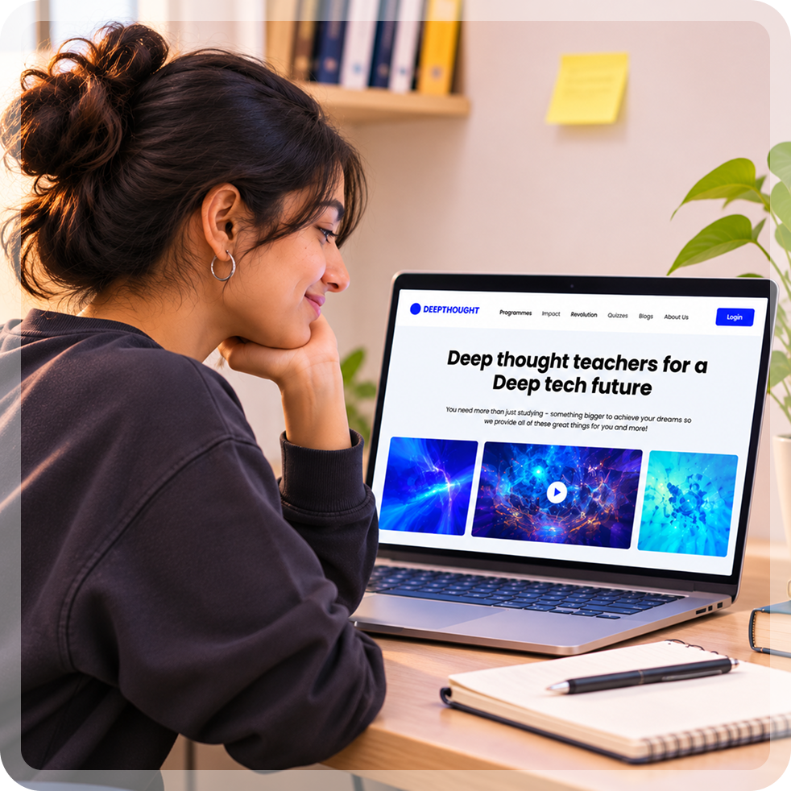
Product Overview
DeepThought EduTech is an EdTech and DeepTech PaaS startup focused on transforming traditional education through research-driven learning and technology.
The Challenges
Identifying key information and usability challenges to create a clear, engaging website experience that helps users understand DeepThought’s purpose, products, and educational ecosystem.
Clear Information,
Clear Navigation
Users need to easily find information about the company, its products, approach, and opportunities. The challenge was to create a logical information structure that reduces confusion and makes important content easy to discover.Making a Complex Ecosystem
Easy to Understand
DeepThought offers multiple products, programs, and solutions. The challenge was to organize this information clearly so users could quickly understand what DeepThought does and how its different offerings connect.Balancing Technology
& Education
DeepThought combines education, research, psychology, and technology. The website needed to communicate this unique positioning without overwhelming users with technical or educational jargon.Mapping the Experience
Mapping the user’s journey through the website to create a clear and intuitive navigation experience.
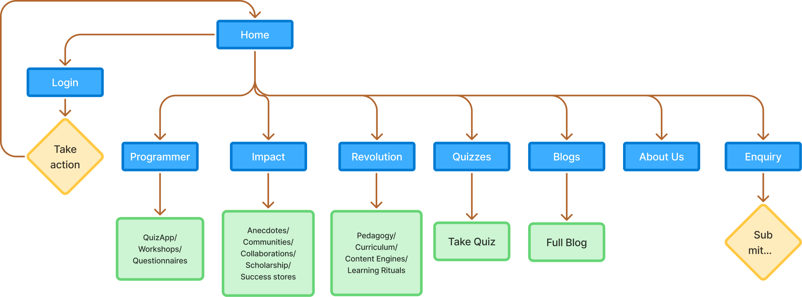
Building the Digital Experience
Create a clear and engaging website experience that makes DeepThought’s programmes, impact, learning approach, and resources easy to explore and understand.
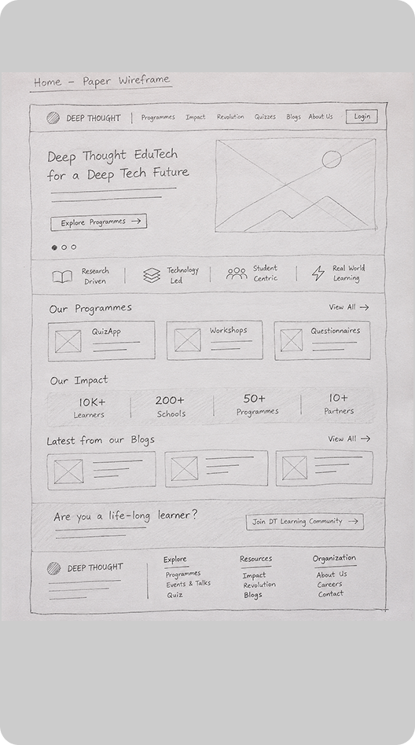
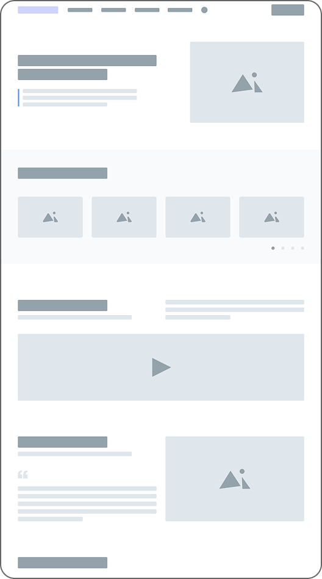
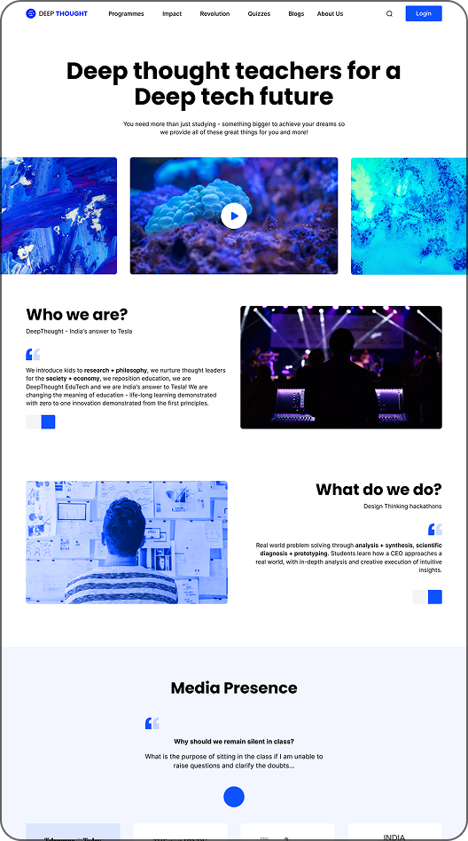
Design System
Establishing a consistent visual language through typography, colors, and reusable components to create a clear, accessible, and cohesive website experience.
Typography
abcdefghijklmnopqrstuvwxyz
1234567890
UI Design
A collection of the main website interfaces, showcasing the homepage, product and solution pages, packages, about us, and enquiry experience.
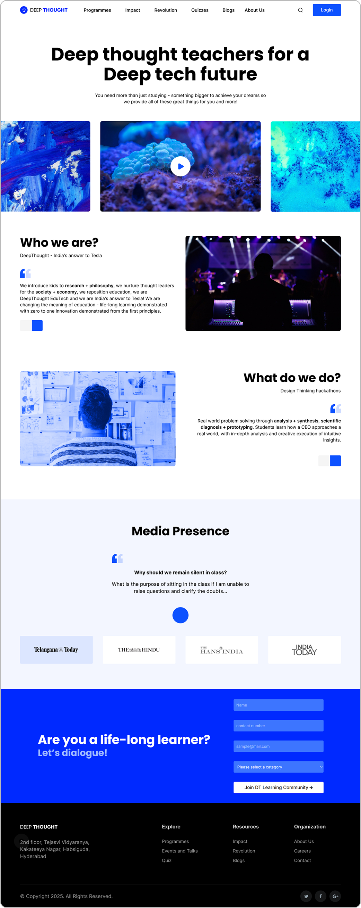
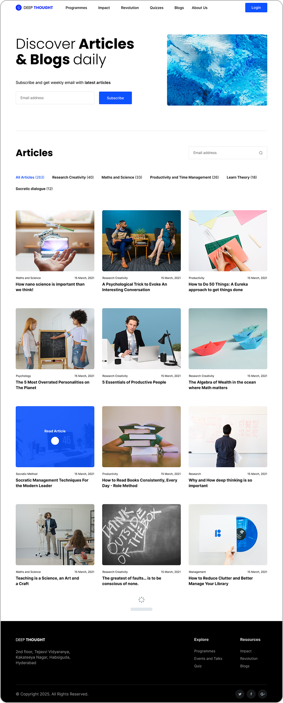
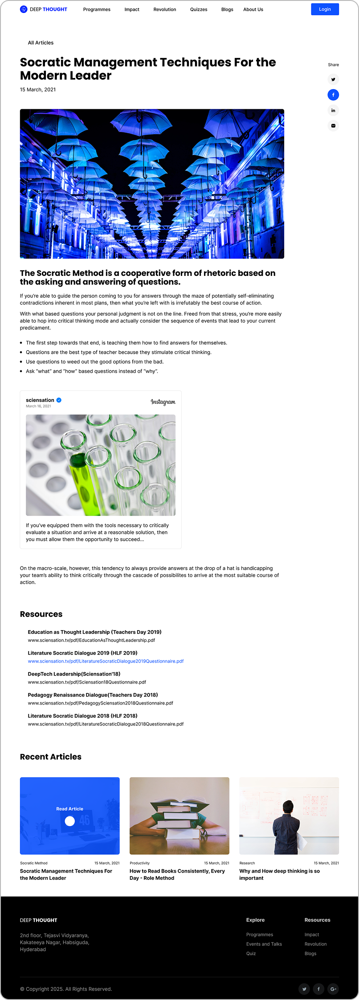
Blog
- The blog listing makes it easy for users to discover articles through categories, search, and organised content cards.
- The article page provides a focused reading experience with detailed content, resources, sharing options, and related articles.
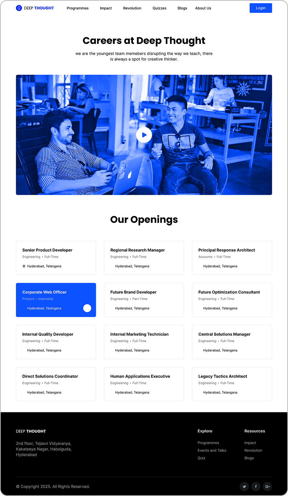
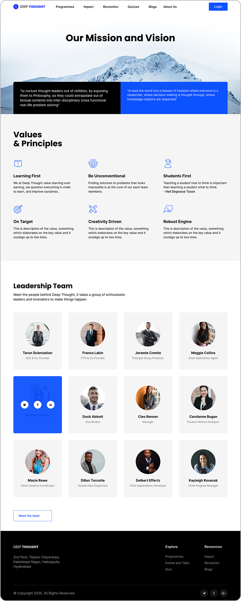
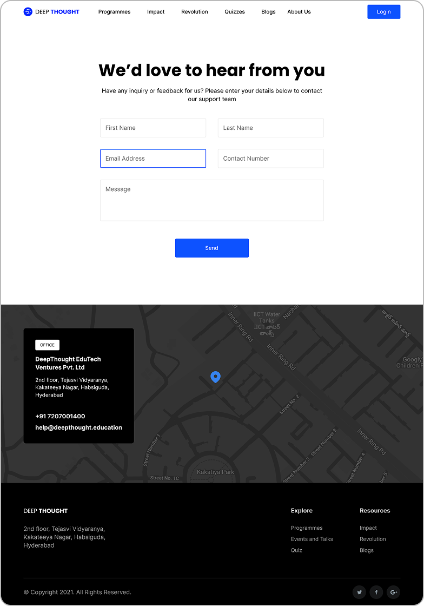
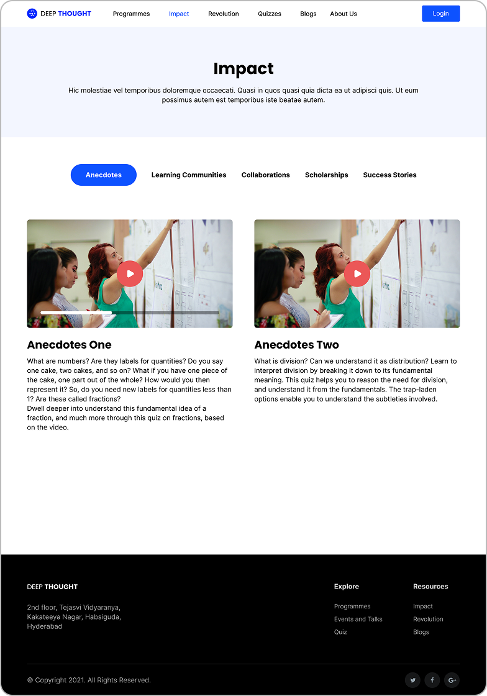
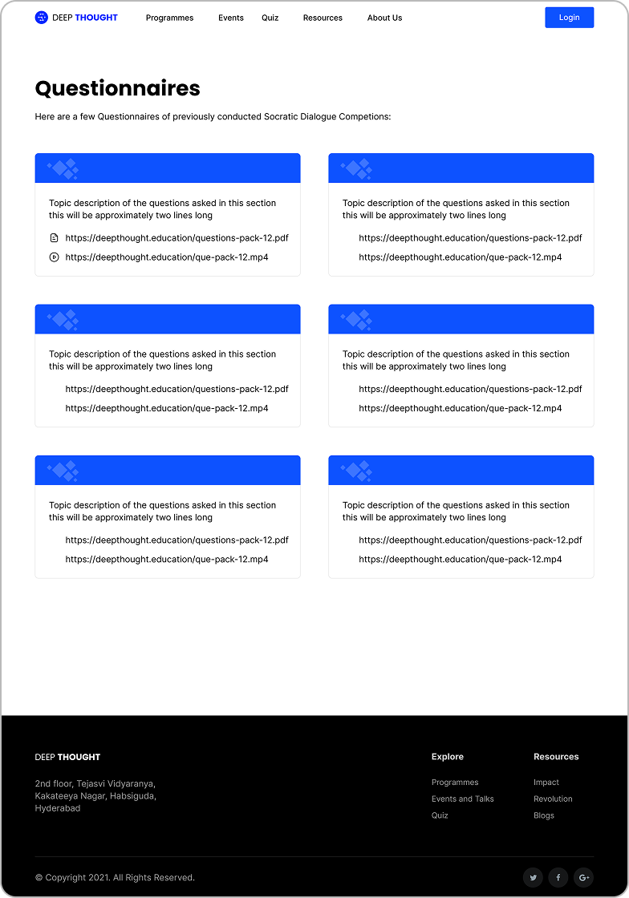
Usability Testing
Evaluated key website interactions to understand how easily users could explore DeepThought’s programmes, impact, content, and enquiry options, helping identify usability improvements for a smoother experience.